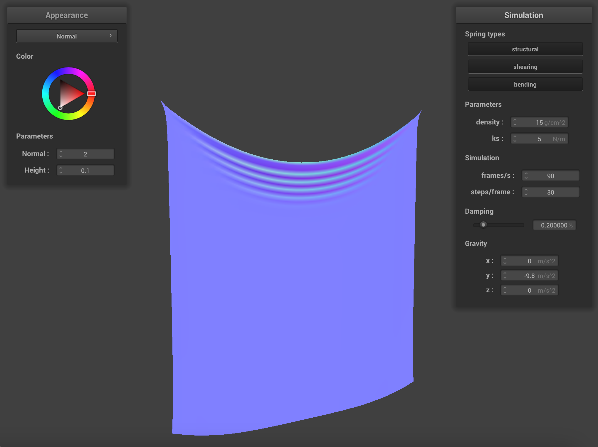
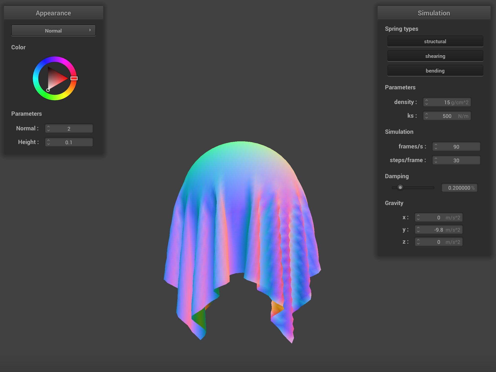
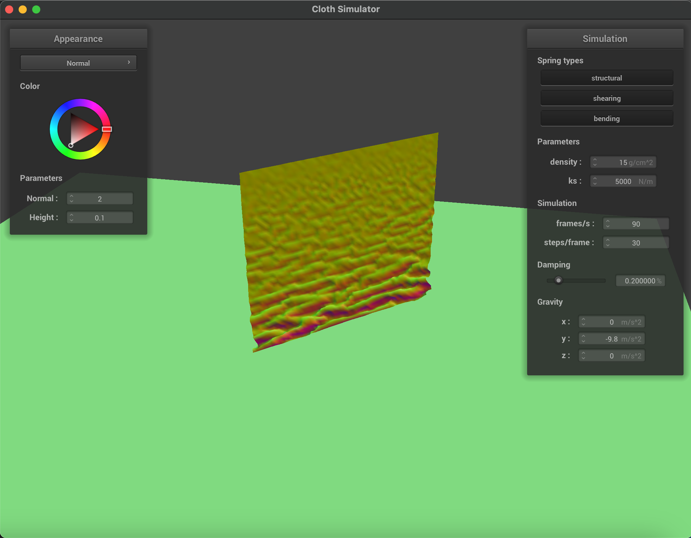
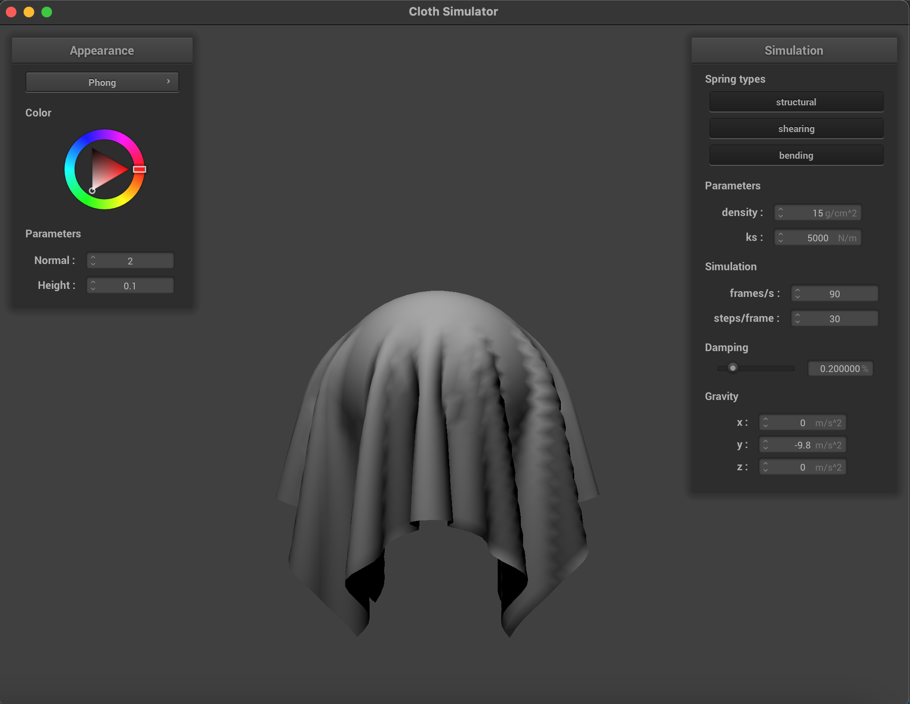
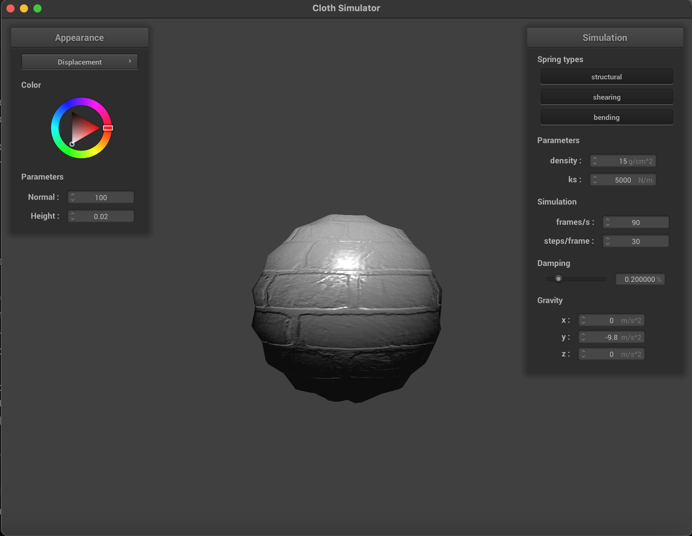
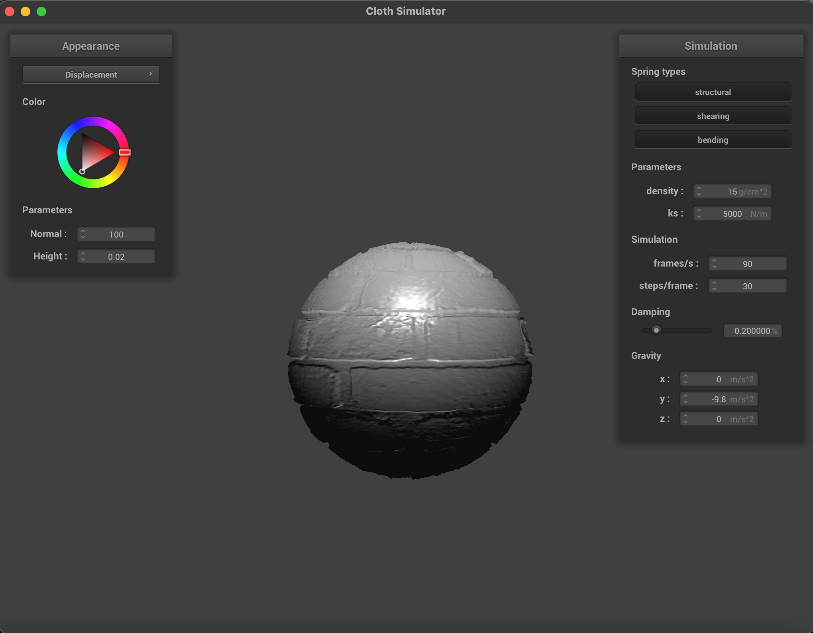
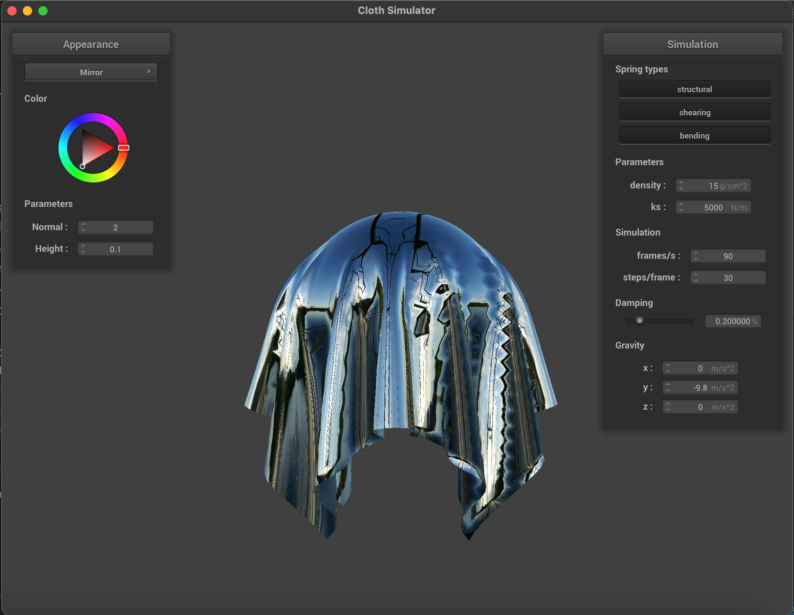

CS184/284A Spring 2025 Homework 4 Write-Up
Link to webpage: cal-cs184-student.github.io/hw-webpages-cat-chu-webpages
Link to GitHub repository: github.com/cal-cs184-student/sp25-hw4-catch4.git

Overview
In this assignment, I built a real-time simulation to render the motion of cloth. I began by implementing a foundational system of point masses and springs to represent objects, then Verlet integration to model particle motion over time. From there, I was able to visualize and enhance interactions in and the appearance of simulations: from a cloth's collisions with itself and other objects, to shading and texture with shader programs. A part of the assigment I found particularly interesting was experimenting with different constants (e.g. density, stiffness, amount of shading) and seeing how they influenced how the cloth moved in realistic ways.Part 1: Masses and springs
I created a grid of evenly spaced point masses, linking them with springs to enforce various behaviors: structure, resistance to shearing and resistance to out-of-plane bending. The images below show the completed wireframe of point masses and springs, followed by some combinations of the springs/constraints to highlight their effects.
|
|
|
|
|
|
|
|
Part 2: Simulation via numerical integration
To implement simulation, I apply a total external force on each point mass, compute the new positions of
point masses with Verlet integration and prevent spring deformation with the constraint that each spring's
length is at most 10% more than its rest_length.
I experiment with a few parameters and visualize their effects below:
ks: Changing the spring constantksaffects how stiff the springs in the cloth are, or how strongly they resist deformation while in motion. At a very lowks, the cloth looks very loose and flutters a lot before settling. However, at a highks, the cloth appears way more rigid, with fewer and longer folds when moving and unnatural tension when resting.density: Density determines how heavy the cloth appears. At a lowdensity, the cloth looks light, floating and slowly falling to its resting state. Whendensityis high, it looks heavy, falling quickly and sagging under its own weight (stretching more) in its resting state.damping:dampingchanges how quickly the cloth slows down (loses energy). Whendampingis low, the cloth is bouncier and also continues to bounce/sway for a long time after being dropped. However, whendampingis high, the cloth's motion quickly subdues and "bounces" only once, freezing immediately into its resting state.
ks |

ks |
ks |
ks |
density |
density |
density |
density |
damping |
damping |
damping |
damping |
Here, the cloth is pinned in 4 places instead of 2. Its final resting state looks like:
Part 3: Handling collisions with other objects
To handle collisions with spheres and planes, I implemented the collide() functions in
sphere.cpp and plane.cpp, then collided every point mass with every possible object in cloth.cpp. For
collisions with spheres, if the distance from the sphere's origin to the point mass's position is less than
the sphere's radius, this means that the point mass is inside or intersects the sphere and should
be corrected / "extended" to the sphere's surface, the tangent_point. The point mass's
position is adjusted accordingly using a correction vector that "bumps" it up from its
last_position to this tangent_point, scaled down a bit due to friction. For
collisions with planes, I check if a point mass has crossed over the plane and needs to be corrected when
the dot products of its current and previous direction vectors with the plane's normal have opposite signs
(are on opposite sides of the plane). If so, I find the tangent_point with ray-plane
intersection and set the correction vector to "bump up" the point mass's last_position to this
tangent_point, and it is similarly scaled by friction.
Below are some images of scene/sphere.json in its final resting state at different ks values.
When ks is low, the cloth is loose and there are more folds as it covers the sphere. As
ks increases, the cloth becomes more rigid and tries harder to retain its original structure
before collisions.

ks: 500 |
ks: 5000 (Default) |
ks: 50000 |
The image below is the shaded cloth lying on the plane in its resting state:
Part 4: Handling self-collisions
To handle self-collisions, I implemented spatial hashing. I start with hash_position(),
where I divide the simulation space into 3D box volumes with dimensions w =
3 * width / num_width_points by h = 3 * height / num_height_points by t =
max(w, h).
For a given point mass, I determine the index of its corresponding 3D box by dividing each coordinate by the
respective 3D box dimension and flooring the result. I then generate a unique hash table key per 3D box
by computing a weighted sum of these indices using distinct prime numbers.
Next, I implement build_spatial_map() to populate the hash table map with all
point masses using hash_position().
Finally, I simulate self-collision in self_collide(), where for each point mass, if it is
within a distance of 2*thickness from a candidate in its corresponding 3D box, I compute a
correction vector of size (2*thickness - distance between point masses) to ensure that the
point mass is exactly 2*thickness from the candidate. Finally, these correction vectors (across
all candidates) are averaged and scaled by simulation_steps.
The following images document how the cloth falls and folds on itself over time:
|

|
|
|
As I increase density from 1->50, the cloth goes from slowly floating and exhibiting smoother
folding to (->) slamming down due to its own mass and exhibiting more intense and compressed folding.
As I increase ks from 1000->50000, the cloth transitions from falling down looking more
loose and wrinkled to (->) looking stiffer, having longer folds and ending in a relatively flattened resting
state.
density |
density |

ks |
ks |
Part 5: Shaders
A shader program renders a graphics pipeline on GPU by partitioning and running sections of it in parallel -
compared to computing on CPU, it leverages the computing power of GPUs and allow for the efficient
rendering of real-time simulations.
Vertex shaders transform vertices and pass their final positions (in gl_Position), along with
other vectors needed to calculate lighting and material effects (e.g. normals, uv coordinates specifically
for texture mapping), to fragment shaders. Then, fragment shaders use these attributes, called varyings, to
calculate the respective color (in out_color) of each fragment. Specifically, a fragment is a
sample, usually thought of as a pixel, produced by rasterization.
The Blinn-Phong shading model is defined as the sum of ambient, diffuse and specular shading in the
following formula:
\[ L = k_a I_a + k_d \left(\frac{I}{r^2}\right) \max(0, \mathbf{n} \cdot \mathbf{l}) + k_s
\left(\frac{I}{r^2}\right) \max(0, \mathbf{n} \cdot \mathbf{h})^p \]
I calculate vectors (in 3D with type vec3) like light direction l pointing from the vertex
position v_position.xyz to the light position u_light_pos, viewing direction v
from v_position.xyz to the camera position u_cam_pos and bisector of the two
normalize(v+l). Putting it all together, I manually assign some coefficients, compute the above
formula and set out_color to the corresponding vec4 vector.
|
|

|
|
The following image is produced by a texture mapping shader with a custom texture:
Bump mapping only modifies the fragment shader, adjusting vertex normals using a height
map (images below use texture_3.png), which can be accessed with the function h(u,v). It sets
the coordinates of the local space normal to the difference in height values (h(u,v) on the uv
coordinates incremented by the width or height of the texture minus h(u,v) on the uv
coordinates), multiplied by height and normal scaling factors. This local space normal is then transformed
to model space and replaces the normal in Blinn-Phong shading.
The approach to displacement mapping involves the same changes to the fragment shader, but also modifies the
vertex shader by incrementing vertex positions based on h(u,v) times the normal, then the
height scaling factor.
The resulting renders have the same shading, but displacement mapping also deforms the geometry of the
sphere to reflect the height map.
|
|
|
Changing the coarseness of the sphere's mesh has no visible effects on the bump mapping render. However, the displacement mapping render is changed: the coarser mesh captures broader, squarish displacements that align with the texture's overall geometry, while the finer mesh follows the smaller bumps and surface details.

-o 16 -a 16 |

-o 16 -a 16 |
-o 128 -a 128 |

-o 128 -a 128 |
The mirror shader reflects the environment by computing the outgoing eye-ray w_o (from the
fragment position to the camera), reflecting -w_o across the surface normal to get the incoming
direction w_i, and then sampling the environment map for the incoming radiance.
|

|
|